Plymouth – Worksheet: cloze text, listening and word search - English
Bristol – Worksheet: cloze text, listening and word search - English
Atlanta – Worksheet: cloze text, listening and word search - English
Sheffield – Worksheet: cloze text, listening and word search - English
Denver – Worksheet: cloze text, listening and word search - English
Seattle – Worksheet: cloze text, listening and word search - English
Dallas – Worksheet: cloze text, listening and word search - English
San Diego – Worksheet: cloze text, listening and word search - English
Houston – Worksheet: cloze text, listening and word search - English
Wyoming – Worksheet: cloze text, listening and word search - English
Vermont – Worksheet: cloze text, listening and word search - English
Delaware – Worksheet: cloze text, listening and word search - English
Maine – Worksheet: cloze text, listening comprehension and word search - English
Idaho – Worksheet: cloze text, listening comprehension and word search - English
Nebraska – Worksheet: cloze text, listening and word search - English
Kansas – Worksheet: cloze text, listening and word search - English
Arkansas – Worksheet: cloze text, listening and word search - English
Nevada – Worksheet: cloze text, listening and word search - English
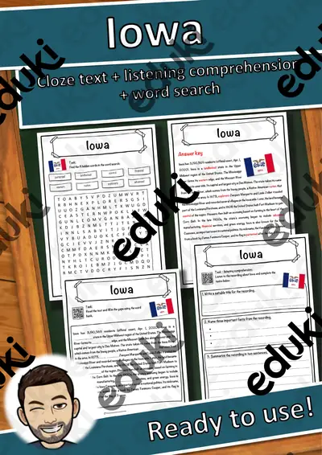
Iowa – Worksheet: cloze text, listening comprehension and word search - English
Utah – Worksheet: cloze text, listening comprehension and word search - English
Oregon – Worksheet: cloze text, listening and word search - English
Kentucky – Worksheet: cloze text, listening and word search - English
Louisiana – Worksheet: cloze text, listening and word search - English
Alabama – Worksheet: cloze text, listening and word search - English
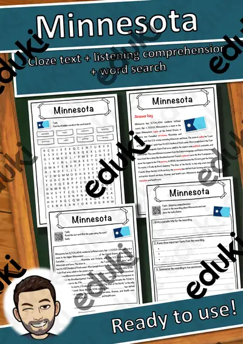
Minnesota – Worksheet: cloze text, listening and word search - English
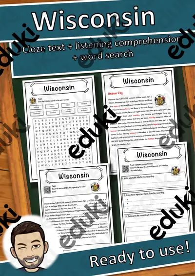
Wisconsin – Worksheet: cloze text, listening and word search - English
Tennessee – Worksheet: cloze text, listening and word search - English
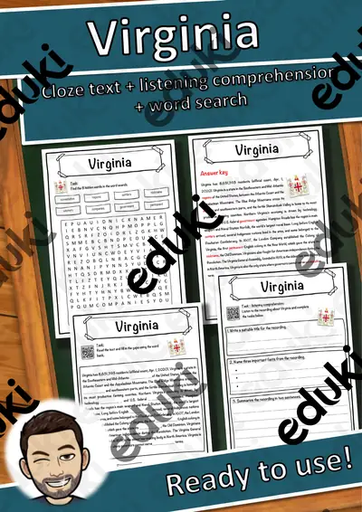
Virginia – Worksheet: cloze text, listening and word search - English
Michigan – Worksheet: cloze text, listening and word search - English
Ohio – Worksheet: cloze text, listening comprehension and word search - English
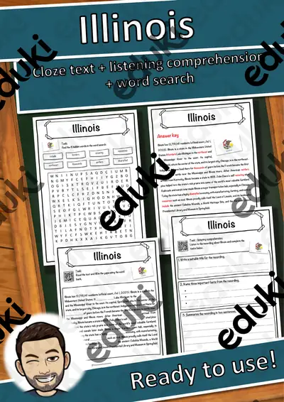
Illinois – Worksheet: cloze text, listening and word search - English
Falcon – Worksheet: cloze text, listening comprehension and word search - English
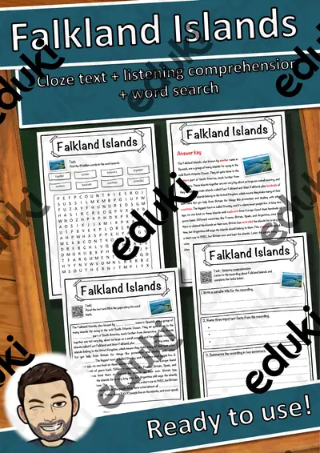
Falkland Islands – Worksheet: cloze text, listening comprehension and word search - English
Fairy tale – Worksheet: cloze text, listening comprehension and word search - English
Fairy – Worksheet: cloze text, listening comprehension and word search - English
Fair trade – Worksheet: cloze text, listening comprehension and word search - English
Factory – Worksheet: cloze text, listening comprehension and word search - English
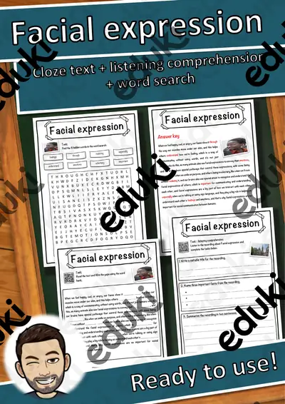
Facial expression – Worksheet: cloze text, listening comprehension and word search - English
Fable – Worksheet: cloze text, listening comprehension and word search - English
Kingston upon Hull – Worksheet: cloze text, listening and word search - English
North Las Vegas, Nevada – Worksheet: cloze text, listening and word search
Fort Wayne, Indiana – Worksheet: cloze text, listening and word search - English
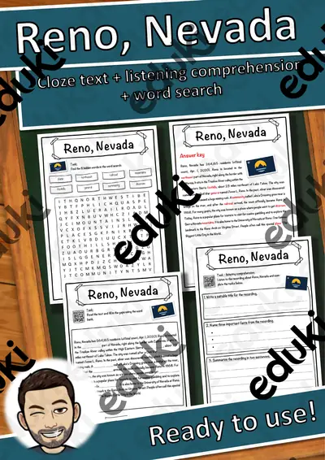
Reno, Nevada – Worksheet: cloze text, listening and word search - English
Milton Keynes – Worksheet: cloze text, listening and word search - English
Francia – Worksheet: cloze text, listening comprehension and word search - English
Fountain pen – Worksheet: cloze text, listening comprehension and word search - English
Fragaria – Worksheet: cloze text, listening comprehension and word search - English
Fraction – Worksheet: cloze text, listening comprehension and word search - English
Fortune-telling – Worksheet: cloze text, listening comprehension and word search - English
Fortress – Worksheet: cloze text, listening comprehension and word search - English
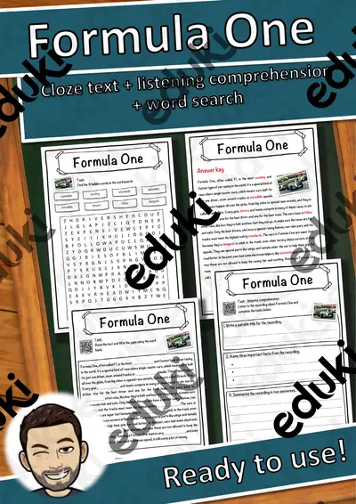
Formula One – Worksheet: cloze text, listening comprehension and word search - English
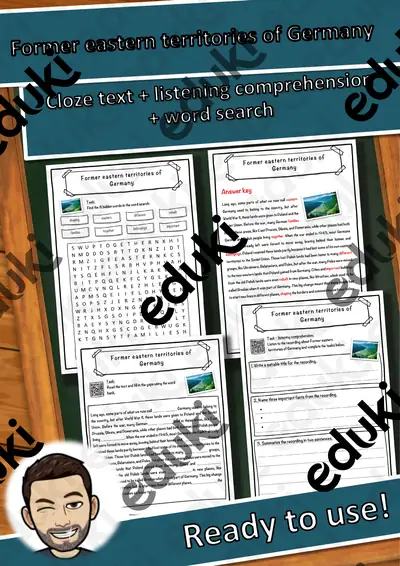
Former eastern territories of Germany – Worksheet: cloze text, listening comprehension and word search - English
Forester – Worksheet: cloze text, listening comprehension and word search - English
Forest fire – Worksheet: cloze text, listening comprehension and word search - English
Forest – Worksheet: cloze text, listening comprehension and word search - English
Eurovision Song Contest – Worksheet: cloze text, listening comprehension and word search - English
Force – Worksheet: cloze text, listening comprehension and word search - English
Football club – Worksheet: cloze text, listening comprehension and word search - English
Foot – Worksheet: cloze text, listening comprehension and word search - English
Food chain – Worksheet: cloze text, listening comprehension and word search - English
Folk music – Worksheet: cloze text, listening comprehension and word search - English
Flute – Worksheet: cloze text, listening comprehension and word search - English
Fog – Worksheet: cloze text, listening comprehension and word search - English
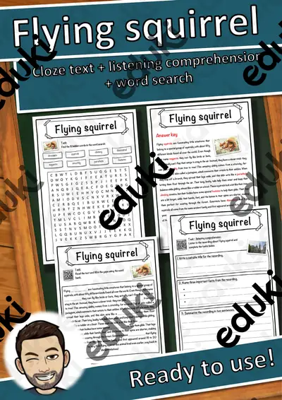
Flying squirrel – Worksheet: cloze text, listening comprehension and word search - English
Filling station – Worksheet: cloze text, listening comprehension and word search - English
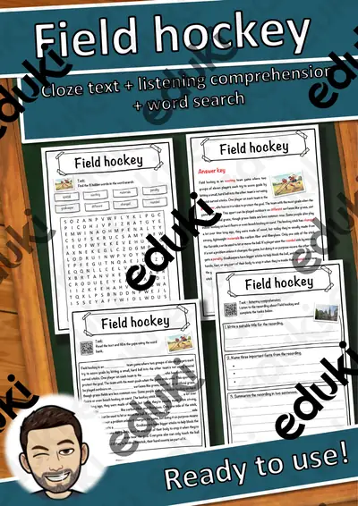
Field hockey – Worksheet: cloze text, listening comprehension and word search - English
Field army – Worksheet: cloze text, listening comprehension and word search - English
Fetus – Worksheet: cloze text, listening comprehension and word search - English
Fever – Worksheet: cloze text, listening comprehension and word search - English
Ferry – Worksheet: cloze text, listening comprehension and word search - English
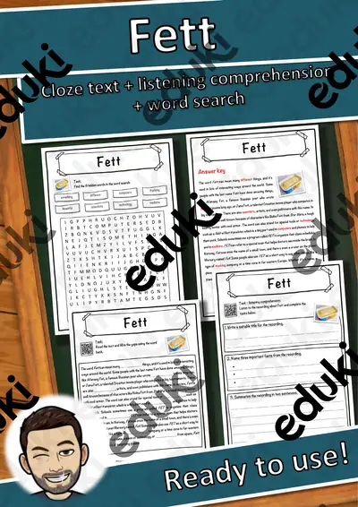
Fett – Worksheet: cloze text, listening comprehension and word search - English
Fertilizer – Worksheet: cloze text, listening comprehension and word search - English
Eye – Worksheet: cloze text, listening comprehension and word search - English
Extraterrestrial life – Worksheet: cloze text, listening comprehension and word search - English
Extinction – Worksheet: cloze text, listening comprehension and word search - English
Exile – Worksheet: cloze text, listening comprehension and word search - English
Exhibition – Worksheet: cloze text, listening comprehension and word search - English
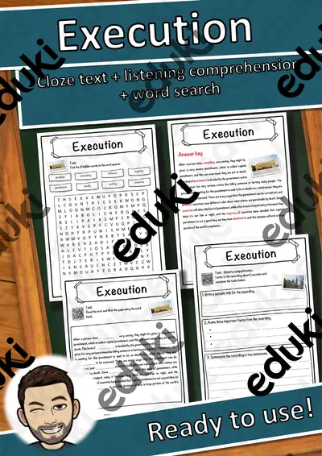
Execution – Worksheet: cloze text, listening comprehension and word search - English
Exclave – Worksheet: cloze text, listening comprehension and word search - English
Excavator – Worksheet: cloze text, listening comprehension and word search - English
European wildcat – Worksheet: cloze text, listening comprehension and word search - English
European robin – Worksheet: cloze text, listening comprehension and word search - English
European pond turtle – Worksheet: cloze text, listening comprehension and word search - English
European hornet – Worksheet: cloze text, listening comprehension and word search - English
European fallow deer – Worksheet: cloze text, listening comprehension and word search - English
European edible dormouse – Worksheet: cloze text, listening comprehension and word search - English
European bison – Worksheet: cloze text, listening comprehension and word search - English
European Space Agency – Worksheet: cloze text, listening comprehension and word search - English
European Parliament – Worksheet: cloze text, listening comprehension and word search - English
European Commission – Worksheet: cloze text, listening comprehension and word search - English
European Capital of Culture – Worksheet: cloze text, listening comprehension and word search - English
Europe – Worksheet: cloze text, listening comprehension and word search - English
Euro – Worksheet: cloze text, listening comprehension and word search - English
Eurasian eagle-owl – Worksheet: cloze text, listening comprehension and word search - English
Etui – Worksheet: cloze text, listening comprehension and word search - English
Ethiopia – Worksheet: cloze text, listening comprehension and word search - English
Ethics – Worksheet: cloze text, listening comprehension and word search - English
Eternity – Worksheet: cloze text, listening comprehension and word search - English
Estonia – Worksheet: cloze text, listening comprehension and word search - English
Estates of the realm – Worksheet: cloze text, listening comprehension and word search - English
Escalope – Worksheet: cloze text, listening comprehension and word search - English
Erinaceidae – Worksheet: cloze text, listening comprehension and word search - English
Eraser – Worksheet: cloze text, listening comprehension and word search - English
Equus – Worksheet: cloze text, listening comprehension and word search - English
Eggplant – Worksheet: cloze text, listening comprehension and word search - English
Discothèque – Worksheet: cloze text, listening comprehension and word search - English
Environmental protection – Worksheet: cloze text, listening comprehension and word search - English
Equatorial Guinea – Worksheet: cloze text, listening comprehension and word search - English
Epilepsy – Worksheet: cloze text, listening comprehension and word search - English
English Civil War – Worksheet: cloze text, listening comprehension and word search - English
Eminent domain – Worksheet: cloze text, listening comprehension and word search - English
Eid al-Fitr – Worksheet: cloze text, listening comprehension and word search - English
Eid al-Adha – Worksheet: cloze text, listening comprehension and word search - English
Engine – Worksheet: cloze text, listening comprehension and word search - English
Engineer – Worksheet: cloze text, listening comprehension and word search - English
Endemic species – Worksheet: cloze text, listening comprehension and word search - English
Emperor – Worksheet: cloze text, listening comprehension and word search - English
Empathy – Worksheet: cloze text, listening comprehension and word search - English
Elephantidae – Worksheet: cloze text, listening comprehension and word search - English
Elm – Worksheet: cloze text, listening comprehension and word search - English
Eiffel Tower – Worksheet: cloze text, listening comprehension and word search - English
Egypt – Worksheet: cloze text, listening comprehension and word search - English
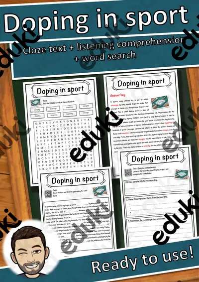
Doping in sport – Worksheet: cloze text, listening comprehension and word search - English
Egg – Worksheet: cloze text, listening comprehension and word search - English
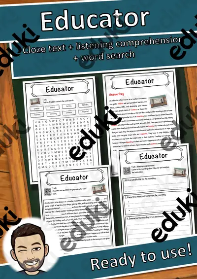
Educator – Worksheet: cloze text, listening comprehension and word search - English
Education – Worksheet: cloze text, listening comprehension and word search - English
Economy – Worksheet: cloze text, listening comprehension and word search - English
Eastern Orthodox Church – Worksheet: cloze text, listening comprehension and word search - English
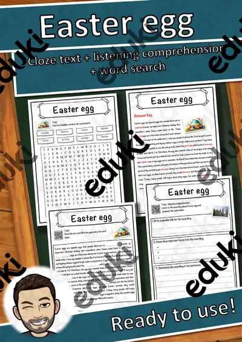
Easter egg – Worksheet: cloze text, listening comprehension and word search - English
Easter – Worksheet: cloze text, listening comprehension and word search - English
East Germany – Worksheet: cloze text, listening comprehension and word search - English
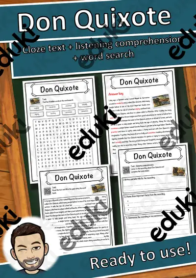
Don Quixote – Worksheet: cloze text, listening comprehension and word search - English
Djibouti – Worksheet: cloze text, listening comprehension and word search - English
Dominican Republic – Worksheet: cloze text, listening comprehension and word search - English
Dome – Worksheet: cloze text, listening comprehension and word search - English
Divorce – Worksheet: cloze text, listening comprehension and word search - English
Divisibility – Worksheet: cloze text, listening comprehension and word search - English
Distillation – Worksheet: cloze text, listening comprehension and word search - English
Disaster – Worksheet: cloze text, listening comprehension and word search - English
Dishwasher – Worksheet: cloze text, listening comprehension and word search - English
Disease – Worksheet: cloze text, listening comprehension and word search - English
Earthquake – Worksheet: cloze text, listening comprehension and word search - English
Earwax – Worksheet: cloze text, listening comprehension and word search - English
Ear – Worksheet: cloze text, listening comprehension and word search - English
Drum kit – Worksheet: cloze text, listening comprehension and word search - English
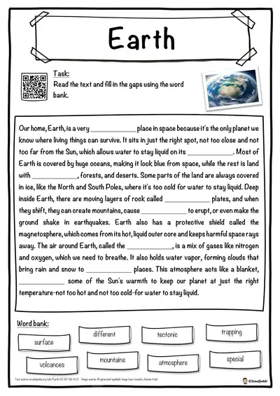
Earth – Worksheet: cloze text, listening comprehension and word search - English
Diplomacy – Worksheet: cloze text, listening comprehension and word search - English
Disability – Worksheet: cloze text, listening comprehension and word search - English
Dioscorea – Worksheet: cloze text, listening comprehension and word search - English
Digestion – Worksheet: cloze text, listening comprehension and word search - English
Diaper – Worksheet: cloze text, listening comprehension and word search - English
Dyslexia – Worksheet: cloze text, listening comprehension and word search - English
Dune – Worksheet: cloze text, listening comprehension and word search - English
Dutch language – Worksheet: cloze text, listening comprehension and word search - English
Dietary fiber – Worksheet: cloze text, listening comprehension and word search - English
Dictatorship – Worksheet: cloze text, listening comprehension and word search - English
Diamond – Worksheet: cloze text, listening comprehension and word search - English
Duke – Worksheet: cloze text, listening comprehension and word search - English
Dialect – Worksheet: cloze text, listening comprehension and word search - English
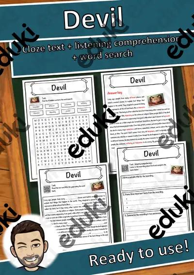
Devil – Worksheet: cloze text, listening comprehension and word search - English
Developing country – Worksheet: cloze text, listening comprehension and word search - English
Democratic Republic of the Congo – Worksheet: cloze text, listening comprehension and word search - English
Democracy – Worksheet: cloze text, listening comprehension and word search - English
Elementary arithmetic – Worksheet: cloze text, listening comprehension and word search - English
Electronics – Worksheet: cloze text, listening comprehension and word search - English
Business enterprise – Worksheet: cloze text, listening comprehension and word search - English
Electronic visual display – Worksheet: cloze text, listening comprehension and word search - English
Electronic music – Worksheet: cloze text, listening comprehension and word search - English
Electronic keyboard – Worksheet: cloze text, listening comprehension and word search - English
Duel – Worksheet: cloze text, listening comprehension and word search - English
Dry season – Worksheet: cloze text, listening comprehension and word search - English
Drum – Worksheet: cloze text, listening comprehension and word search - English
Drug – Worksheet: cloze text, listening comprehension and word search - English
Drought – Worksheet: cloze text, listening comprehension and word search - English
Down syndrome – Worksheet: cloze text, listening comprehension and word search - English
Driver's license – Worksheet: cloze text, listening comprehension and word search - English
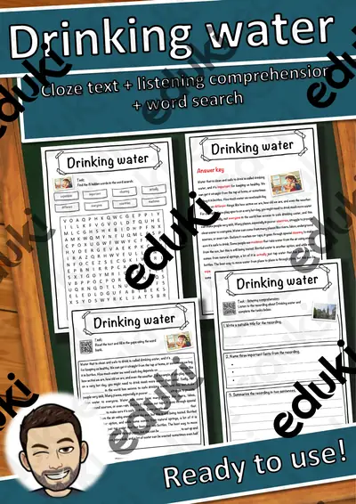
Drinking water – Worksheet: cloze text, listening comprehension and word search - English
Election – Worksheet: cloze text, listening comprehension and word search - English
Elbe – Worksheet: cloze text, listening comprehension and word search - English
Elbe Sandstone Mountains – Worksheet: cloze text, listening comprehension and word search - English
Deer – Worksheet: cloze text, listening comprehension and word search - English
Deed – Worksheet: cloze text, listening comprehension and word search - English
Dead Sea – Worksheet: cloze text, listening comprehension and word search - English
Date palm – Worksheet: cloze text, listening comprehension and word search - English
Dasypodidae – Worksheet: cloze text, listening comprehension and word search - English
Danish language – Worksheet: cloze text, listening comprehension and word search - English
Dance – Worksheet: cloze text, listening comprehension and word search - English
Dalton Gang – Worksheet: cloze text, listening comprehension and word search - English
Damascus – Worksheet: cloze text, listening comprehension and word search - English
Attention deficit hyperactivity disorder – Worksheet: cloze text, listening comprehension and word search - English
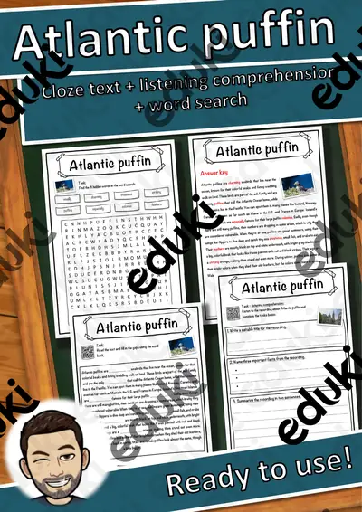
Atlantic puffin – Worksheet: cloze text, listening comprehension and word search - English
Athens – Worksheet: cloze text, listening comprehension and word search - English
Astatine – Worksheet: cloze text, listening comprehension and word search - English
Association football – Worksheet: cloze text, listening comprehension and word search - English
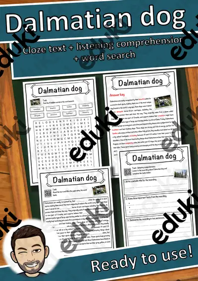
Dalmatian dog – Worksheet: cloze text, listening comprehension and word search - English
Dachshund – Worksheet: cloze text, listening comprehension and word search - English
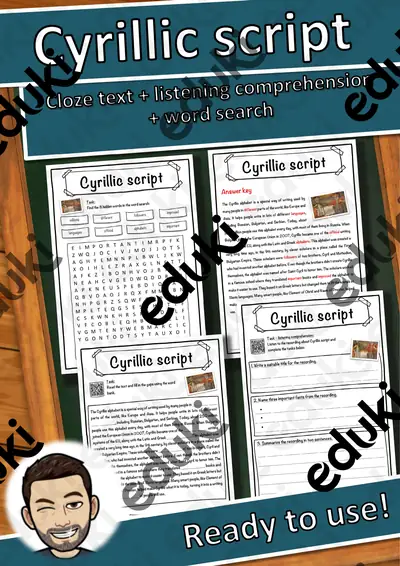
Cyrillic script – Worksheet: cloze text, listening comprehension and word search - English
Cyprus – Worksheet: cloze text, listening comprehension and word search - English
Cylinder – Worksheet: cloze text, listening comprehension and word search - English
Cycle sport – Worksheet: cloze text, listening comprehension and word search - English
Cutlery – Worksheet: cloze text, listening comprehension and word search - English
Curfew – Worksheet: cloze text, listening comprehension and word search - English
Culture – Worksheet: cloze text, listening comprehension and word search - English
Cuneiform – Worksheet: cloze text, listening comprehension and word search - English
Cucurbita – Worksheet: cloze text, listening comprehension and word search - English
Cucumber – Worksheet: cloze text, listening comprehension and word search - English
Cuba – Worksheet: cloze text, listening comprehension and word search - English
Crystal – Worksheet: cloze text, listening comprehension and word search - English
Cryptography – Worksheet: cloze text, listening comprehension and word search - English
Crustacean – Worksheet: cloze text, listening comprehension and word search - English
Cryptobranchoidea – Worksheet: cloze text, listening comprehension and word search - English
Crusades – Worksheet: cloze text, listening comprehension and word search - English
Cruelty to animals – Worksheet: cloze text, listening comprehension and word search - English
Crossbow – Worksheet: cloze text, listening comprehension and word search - English
Crocodilia – Worksheet: cloze text, listening comprehension and word search - English
Croatian language – Worksheet: cloze text, listening comprehension and word search - English
Croatia – Worksheet: cloze text, listening comprehension and word search - English
Crimea – Worksheet: cloze text, listening comprehension and word search - English
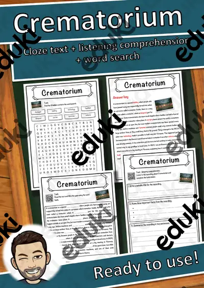
Crematorium – Worksheet: cloze text, listening comprehension and word search - English
Credit – Worksheet: cloze text, listening comprehension and word search - English
Creativity – Worksheet: cloze text, listening comprehension and word search - English
Crane – Worksheet: cloze text, listening comprehension and word search - English
Court – Worksheet: cloze text, listening comprehension and word search - English
Coup d'état – Worksheet: cloze text, listening comprehension and word search - English
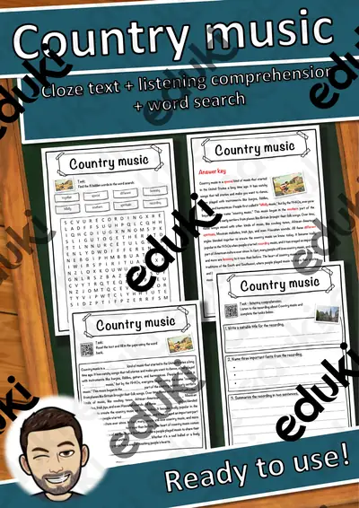
Country music – Worksheet: cloze text, listening comprehension and word search - English
Council of Europe – Worksheet: cloze text, listening comprehension and word search - English
Cough – Worksheet: cloze text, listening comprehension and word search - English
Cougar – Worksheet: cloze text, listening comprehension and word search - English
Corylus avellana – Worksheet: cloze text, listening comprehension and word search - English
Corvidae – Worksheet: cloze text, listening comprehension and word search - English
Corsica – Worksheet: cloze text, listening comprehension and word search - English
Corruption – Worksheet: cloze text, listening comprehension and word search - English
Coral – Worksheet: cloze text, listening comprehension and word search - English
Copper – Worksheet: cloze text, listening comprehension and word search - English
Copenhagen – Worksheet: cloze text, listening comprehension and word search - English
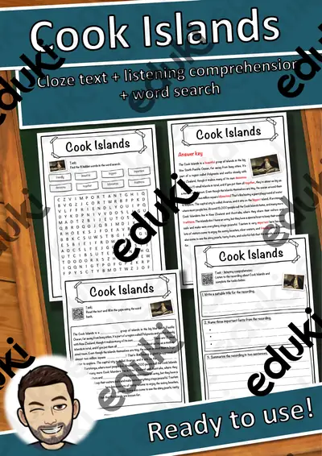
Cook Islands – Worksheet: cloze text, listening comprehension and word search - English
Controlled-access highway – Worksheet: cloze text, listening comprehension and word search - English
Contract – Worksheet: cloze text, listening comprehension and word search - English
Continental Reformed Protestantism – Worksheet: cloze text, listening comprehension and word search - English
Continent – Worksheet: cloze text, listening comprehension and word search - English
Construction worker – Worksheet: cloze text, listening comprehension and word search - English
Constitution – Worksheet: cloze text, listening comprehension and word search - English
Constantine the Great – Worksheet: cloze text, listening comprehension and word search - English
Conspiracy theory – Worksheet: cloze text, listening comprehension and word search - English
Consciousness – Worksheet: cloze text, listening comprehension and word search - English
Conservatism – Worksheet: cloze text, listening comprehension and word search - English
Congress of Vienna – Worksheet: cloze text, listening comprehension and word search - English
Conscience – Worksheet: cloze text, listening comprehension and word search - English
Confucius – Worksheet: cloze text, listening comprehension and word search - English
Conductor – Worksheet: cloze text, listening comprehension and word search - English
Concrete – Worksheet: cloze text, listening comprehension and word search - English
Computer programming – Worksheet: cloze text, listening comprehension and word search - English
Computer mouse – Worksheet: cloze text, listening comprehension and word search - English
Computer file – Worksheet: cloze text, listening comprehension and word search - English
Comprehensive school – Worksheet: cloze text, listening comprehension and word search - English
Compass – Worksheet: cloze text, listening comprehension and word search - English
Composer – Worksheet: cloze text, listening comprehension and word search - English
Comoros – Worksheet: cloze text, listening comprehension and word search - English
Communism – Worksheet: cloze text, listening comprehension and word search - English
Communication – Worksheet: cloze text, listening comprehension and word search - English
Common slow worm – Worksheet: cloze text, listening comprehension and word search - English
Common nightingale – Worksheet: cloze text, listening comprehension and word search - English
Common cuckoo – Worksheet: cloze text, listening comprehension and word search - English
Common cold – Worksheet: cloze text, listening comprehension and word search - English
Common crane – Worksheet: cloze text, listening comprehension and word search - English
Common carp – Worksheet: cloze text, listening comprehension and word search - English
Common blackbird – Worksheet: cloze text, listening comprehension and word search - English
Comet – Worksheet: cloze text, listening comprehension and word search - English
Colosseum – Worksheet: cloze text, listening comprehension and word search - English
Colombia – Worksheet: cloze text, listening comprehension and word search - English
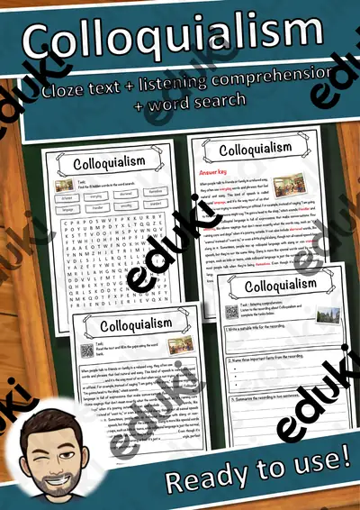
Colloquialism – Worksheet: cloze text, listening comprehension and word search - English
Coleoidea – Worksheet: cloze text, listening comprehension and word search - English
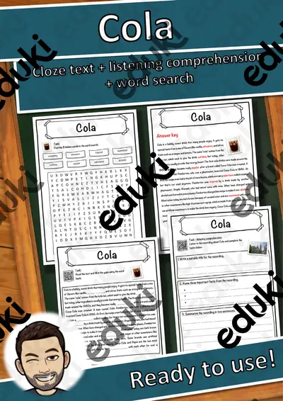
Cola – Worksheet: cloze text, listening comprehension and word search - English
Cold War – Worksheet: cloze text, listening comprehension and word search - English
Coffee – Worksheet: cloze text, listening comprehension and word search - English
Coin – Worksheet: cloze text, listening comprehension and word search - English
Coconut tree – Worksheet: cloze text, listening comprehension and word search - English
Coccinellidae – Worksheet: cloze text, listening comprehension and word search - English
Coast – Worksheet: cloze text, listening comprehension and word search - English
Coach – Worksheet: cloze text, listening comprehension and word search - English
Coal – Worksheet: cloze text, listening comprehension and word search - English
Clock – Worksheet: cloze text, listening comprehension and word search - English
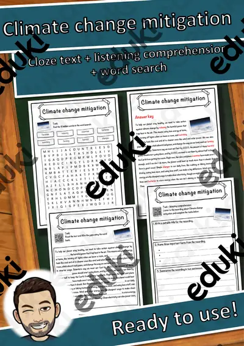
Climate change mitigation – Worksheet: cloze text, listening comprehension and word search - English
Climate change – Worksheet: cloze text, listening comprehension and word search - English
Climate – Worksheet: cloze text, listening comprehension and word search - English
Cleopatra – Worksheet: cloze text, listening comprehension and word search - English
Clarinet – Worksheet: cloze text, listening comprehension and word search - English
Civil war – Worksheet: cloze text, listening comprehension and word search - English
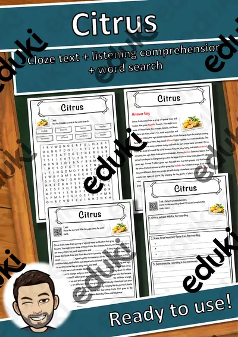
Citrus – Worksheet: cloze text, listening comprehension and word search - English
Citizen – Worksheet: cloze text, listening comprehension and word search - English
Circus – Worksheet: cloze text, listening comprehension and word search - English
Circulatory system – Worksheet: cloze text, listening comprehension and word search - English
Circle of latitude – Worksheet: cloze text, listening comprehension and word search - English
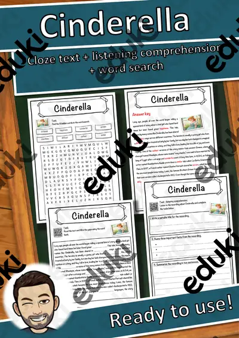
Cinderella – Worksheet: cloze text, listening comprehension and word search - English
Cigarette – Worksheet: cloze text, listening comprehension and word search - English
Chromium – Worksheet: cloze text, listening comprehension and word search - English
Christopher Columbus – Worksheet: cloze text, listening comprehension and word search - English
Christmas carol – Worksheet: cloze text, listening comprehension and word search - English
Christianity – Worksheet: cloze text, listening comprehension and word search - English
Christian democracy – Worksheet: cloze text, listening comprehension and word search - English
Christian Democratic Union of Germany – Worksheet: cloze text, listening comprehension and word search - English
Chocolate-coated marshmallow treats – Worksheet: cloze text, listening comprehension and word search - English
Chor – Worksheet: cloze text, listening comprehension and word search - English
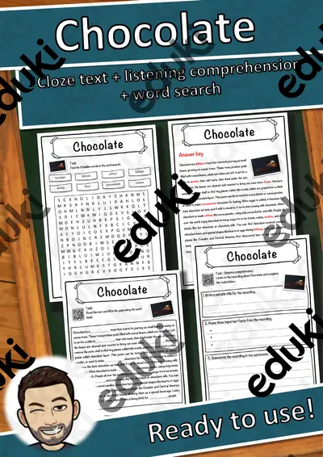
Chocolate – Worksheet: cloze text, listening comprehension and word search - English
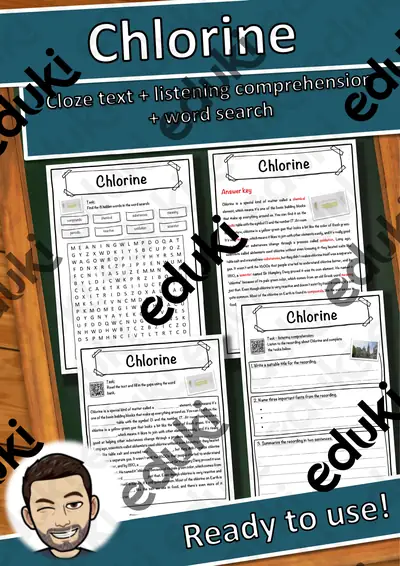
Chlorine – Worksheet: cloze text, listening comprehension and word search - English
Chinchillidae – Worksheet: cloze text, listening comprehension and word search - English
Chimney sweep – Worksheet: cloze text, listening comprehension and word search - English
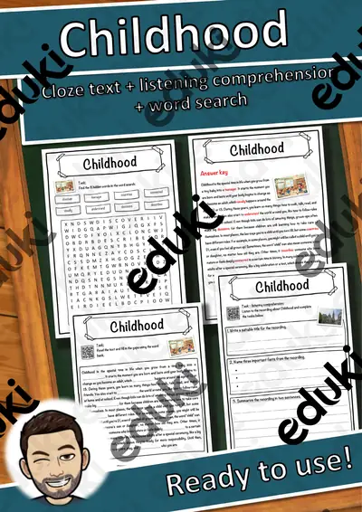
Childhood – Worksheet: cloze text, listening comprehension and word search - English
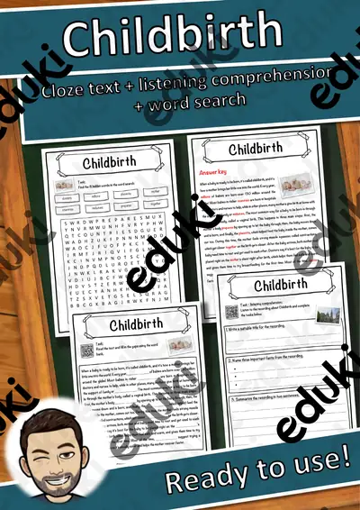
Childbirth – Worksheet: cloze text, listening comprehension and word search - English
Child protection – Worksheet: cloze text, listening comprehension and word search - English
Child labour – Worksheet: cloze text, listening comprehension and word search - English
Chickenpox – Worksheet: cloze text, listening comprehension and word search - English
Chewing gum – Worksheet: cloze text, listening comprehension and word search - English
Chestnut – Worksheet: cloze text, listening comprehension and word search - English
Chess – Worksheet: cloze text, listening comprehension and word search - English
Chemistry – Worksheet: cloze text, listening comprehension and word search - English
Cheloniidae – Worksheet: cloze text, listening comprehension and word search - English
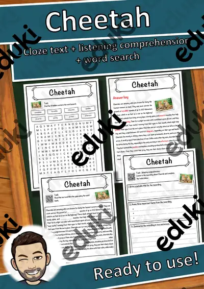
Cheetah – Worksheet: cloze text, listening comprehension and word search - English
Cheese – Worksheet: cloze text, listening comprehension and word search - English
Chechnya – Worksheet: cloze text, listening comprehension and word search - English
Charcoal – Worksheet: cloze text, listening comprehension and word search - English
Charlemagne – Worksheet: cloze text, listening comprehension and word search - English
Chamois – Worksheet: cloze text, listening comprehension and word search - English
Cerium – Worksheet: cloze text, listening comprehension and word search - English
Cetacean – Worksheet: cloze text, listening comprehension and word search - English
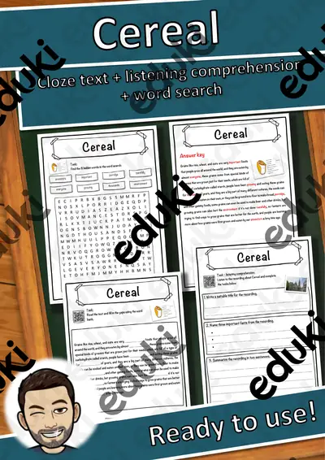
Cereal – Worksheet: cloze text, listening comprehension and word search - English
Ceramic – Worksheet: cloze text, listening comprehension and word search - English
Century – Worksheet: cloze text, listening comprehension and word search - English
Centrifugal force – Worksheet: cloze text, listening comprehension and word search - English
Central African Republic – Worksheet: cloze text, listening comprehension and word search - English
Cemetery – Worksheet: cloze text, listening comprehension and word search - English
Celts – Worksheet: cloze text, listening comprehension and word search - English
Cello – Worksheet: cloze text, listening comprehension and word search - English
Cecum – Worksheet: cloze text, listening comprehension and word search - English
Caviidae – Worksheet: cloze text, listening comprehension and word search - English
Cave painting – Worksheet: cloze text, listening comprehension and word search - English
Cave – Worksheet: cloze text, listening comprehension and word search - English
Cauliflower – Worksheet: cloze text, listening comprehension and word search - English
Caucasus Mountains – Worksheet: cloze text, listening comprehension and word search - English
Cattle – Worksheet: cloze text, listening comprehension and word search - English
Catholic Church – Worksheet: cloze text, listening comprehension and word search - English
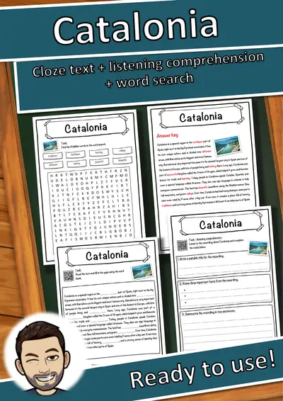
Catalonia – Worksheet: cloze text, listening comprehension and word search - English
Cat – Worksheet: cloze text, listening comprehension and word search - English
Cassette deck – Worksheet: cloze text, listening comprehension and word search - English
Cartilage – Worksheet: cloze text, listening comprehension and word search - English
Carthage – Worksheet: cloze text, listening comprehension and word search - English
Carrot – Worksheet: cloze text, listening comprehension and word search - English
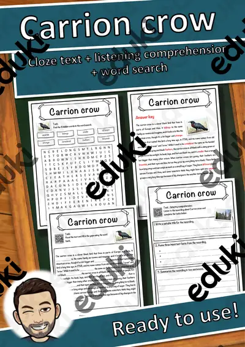
Carrion crow – Worksheet: cloze text, listening comprehension and word search - English
Carrion – Worksheet: cloze text, listening comprehension and word search - English
Carnivorous plant – Worksheet: cloze text, listening comprehension and word search - English
Carousel – Worksheet: cloze text, listening comprehension and word search - English
Carl Linnaeus – Worksheet: cloze text, listening comprehension and word search - English
Carnivora – Worksheet: cloze text, listening comprehension and word search - English
Carinthia – Worksheet: cloze text, listening comprehension and word search - English
Caricature – Worksheet: cloze text, listening comprehension and word search - English
Caribbean – Worksheet: cloze text, listening comprehension and word search - English
Card game – Worksheet: cloze text, listening comprehension and word search - English
Carbon – Worksheet: cloze text, listening comprehension and word search - English
Carbohydrate – Worksheet: cloze text, listening comprehension and word search - English
Caravan – Worksheet: cloze text, listening comprehension and word search - English
Caramel – Worksheet: cloze text, listening comprehension and word search - English
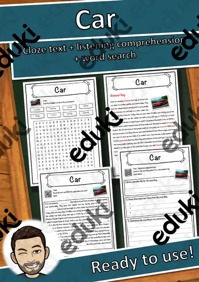
Car – Worksheet: cloze text, listening comprehension and word search - English
Capsicum – Worksheet: cloze text, listening comprehension and word search - English
Capra – Worksheet: cloze text, listening comprehension and word search - English
Capitalism – Worksheet: cloze text, listening comprehension and word search - English
Capital city – Worksheet: cloze text, listening comprehension and word search - English
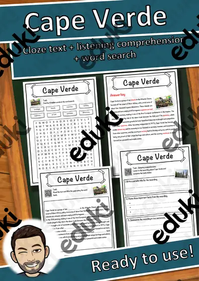
Cape Verde – Worksheet: cloze text, listening comprehension and word search - English
Cape Town – Worksheet: cloze text, listening comprehension and word search - English
Canton of Uri – Worksheet: cloze text, listening comprehension and word search - English
Cannabis – Worksheet: cloze text, listening comprehension and word search - English
Canidae – Worksheet: cloze text, listening comprehension and word search - English
Canary Islands – Worksheet: cloze text, listening comprehension and word search - English
Canada – Worksheet: cloze text, listening comprehension and word search - English
Camouflage – Worksheet: cloze text, listening comprehension and word search - English
Camino de Santiago – Worksheet: cloze text, listening comprehension and word search - English
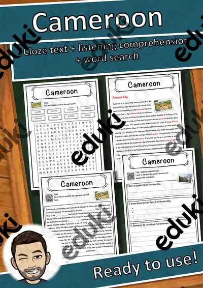
Cameroon – Worksheet: cloze text, listening comprehension and word search - English
Camera – Worksheet: cloze text, listening comprehension and word search - English
Camelidae – Worksheet: cloze text, listening comprehension and word search - English
Cambodia – Worksheet: cloze text, listening comprehension and word search - English
California – Worksheet: cloze text, listening comprehension and word search - English
Calendar – Worksheet: cloze text, listening comprehension and word search - English
Cairo – Worksheet: cloze text, listening comprehension and word search - English
Cactus – Worksheet: cloze text, listening comprehension and word search - English
Byzantine Empire – Worksheet: cloze text, listening comprehension and word search - English
Cable transport – Worksheet: cloze text, listening comprehension and word search - English
Business oligarch – Worksheet: cloze text, listening comprehension and word search - English
Buteo – Worksheet: cloze text, listening comprehension and word search - English
Burgundy – Worksheet: cloze text, listening comprehension and word search - English
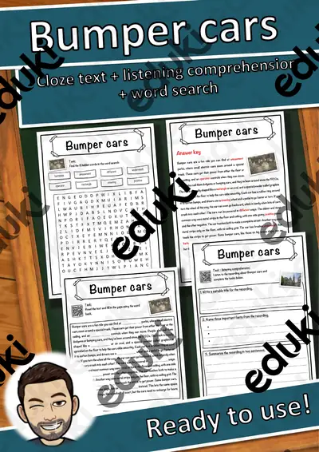
Bumper cars – Worksheet: cloze text, listening comprehension and word search - English
Bullfighting – Worksheet: cloze text, listening comprehension and word search - English
Bumblebee – Worksheet: cloze text, listening comprehension and word search - English
Bulgaria – Worksheet: cloze text, listening comprehension and word search - English
Bud – Worksheet: cloze text, listening comprehension and word search - English
Brussels metropolitan area – Worksheet: cloze text, listening comprehension and word search - English
Bucharest – Worksheet: cloze text, listening comprehension and word search - English
Bruges – Worksheet: cloze text, listening comprehension and word search - English
Brown trout – Worksheet: cloze text, listening comprehension and word search - English
Brown bear – Worksheet: cloze text, listening comprehension and word search - English
Bronze Age – Worksheet: cloze text, listening comprehension and word search - English
Bromine – Worksheet: cloze text, listening comprehension and word search - English
Broccoli – Worksheet: cloze text, listening comprehension and word search - English
Broad-leaved tree – Worksheet: cloze text, listening comprehension and word search - English
Brno – Worksheet: cloze text, listening comprehension and word search - English
Brittany – Worksheet: cloze text, listening comprehension and word search - English
British Museum – Worksheet: cloze text, listening comprehension and word search - English
British Empire – Worksheet: cloze text, listening comprehension and word search - English
Breast – Worksheet: cloze text, listening comprehension and word search - English
Bread – Worksheet: cloze text, listening comprehension and word search - English
Brazil – Worksheet: cloze text, listening comprehension and word search - English
Brass – Worksheet: cloze text, listening comprehension and word search - English
Brassica – Worksheet: cloze text, listening comprehension and word search - English
Brain – Worksheet: cloze text, listening comprehension and word search - English
Brachycera – Worksheet: cloze text, listening comprehension and word search - English
Bovini – Worksheet: cloze text, listening comprehension and word search - English
Bounty – Worksheet: cloze text, listening comprehension and word search - English
Bottle – Worksheet: cloze text, listening comprehension and word search - English
Bosnia and Herzegovina – Worksheet: cloze text, listening comprehension and word search - English
Border – Worksheet: cloze text, listening comprehension and word search - English
Boomerang – Worksheet: cloze text, listening comprehension and word search - English
Book – Worksheet: cloze text, listening comprehension and word search - English
Bonnie and Clyde – Worksheet: cloze text, listening comprehension and word search - English
Bone – Worksheet: cloze text, listening comprehension and word search - English
Bolivia – Worksheet: cloze text, listening comprehension and word search - English
Bog body – Worksheet: cloze text, listening comprehension and word search - English
Bog – Worksheet: cloze text, listening comprehension and word search - English
Body of water – Worksheet: cloze text, listening comprehension and word search - English
Boers – Worksheet: cloze text, listening comprehension and word search - English
Blue whale – Worksheet: cloze text, listening comprehension and word search - English
Board game – Worksheet: cloze text, listening comprehension and word search - English
Blood – Worksheet: cloze text, listening comprehension and word search - English
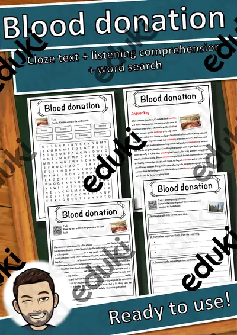
Blood donation – Worksheet: cloze text, listening comprehension and word search - English
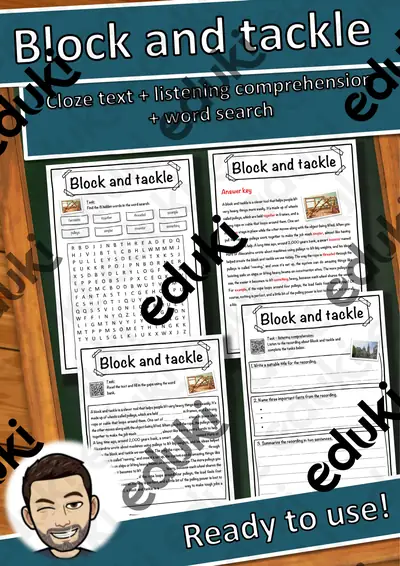
Block and tackle – Worksheet: cloze text, listening comprehension and word search - English
Blindness – Worksheet: cloze text, listening comprehension and word search - English
Blast furnace – Worksheet: cloze text, listening comprehension and word search - English
Bladder – Worksheet: cloze text, listening comprehension and word search - English
Black pepper – Worksheet: cloze text, listening comprehension and word search - English
Black hole – Worksheet: cloze text, listening comprehension and word search - English
Black and white – Worksheet: cloze text, listening comprehension and word search - English
Black Sea – Worksheet: cloze text, listening comprehension and word search - English
Black Forest gateau – Worksheet: cloze text, listening comprehension and word search - English
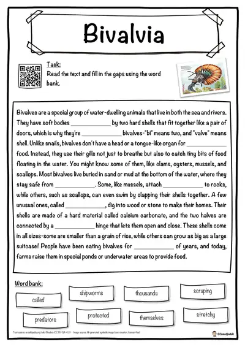
Bivalvia – Worksheet: cloze text, listening comprehension and word search - English
Bismuth – Worksheet: cloze text, listening comprehension and word search - English
Bishop – Worksheet: cloze text, listening comprehension and word search - English
Birthday – Worksheet: cloze text, listening comprehension and word search - English
Bird migration – Worksheet: cloze text, listening comprehension and word search - English
Bird – Worksheet: cloze text, listening comprehension and word search - English
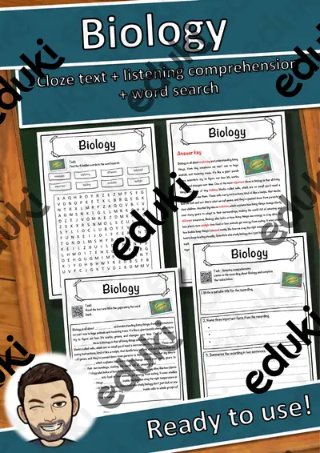
Biology – Worksheet: cloze text, listening comprehension and word search - English
Bile – Worksheet: cloze text, listening comprehension and word search - English
Bight – Worksheet: cloze text, listening comprehension and word search - English
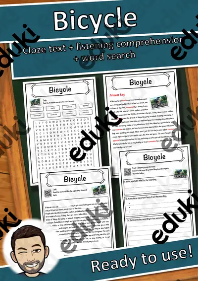
Bicycle – Worksheet: cloze text, listening comprehension and word search - English
Big Bang – Worksheet: cloze text, listening comprehension and word search - English
Biblical Magi – Worksheet: cloze text, listening comprehension and word search - English
Bible – Worksheet: cloze text, listening comprehension and word search - English
Bernese Mountain Dog – Worksheet: cloze text, listening comprehension and word search - English
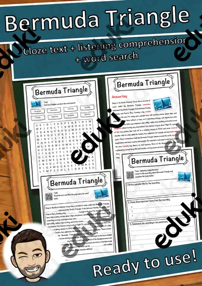
Bermuda Triangle – Worksheet: cloze text, listening comprehension and word search - English
Bengali language – Worksheet: cloze text, listening comprehension and word search - English
Beluga whale – Worksheet: cloze text, listening comprehension and word search - English
Bellis perennis – Worksheet: cloze text, listening comprehension and word search - English
Bell – Worksheet: cloze text, listening comprehension and word search - English
Belief – Worksheet: cloze text, listening comprehension and word search - English
Belgrade – Worksheet: cloze text, listening comprehension and word search - English
Belgium – Worksheet: cloze text, listening comprehension and word search - English
Beijing – Worksheet: cloze text, listening comprehension and word search - English
Beetroot – Worksheet: cloze text, listening comprehension and word search - English
Beetle – Worksheet: cloze text, listening comprehension and word search - English
Beer – Worksheet: cloze text, listening comprehension and word search - English
Bee – Worksheet: cloze text, listening comprehension and word search - English
Beaver – Worksheet: cloze text, listening comprehension and word search - English
Beat – Worksheet: cloze text, listening comprehension and word search - English
Beard – Worksheet: cloze text, listening comprehension and word search - English
Bear – Worksheet: cloze text, listening comprehension and word search - English
Bean – Worksheet: cloze text, listening comprehension and word search - English
Beak – Worksheet: cloze text, listening comprehension and word search - English
Bayeux Tapestry – Worksheet: cloze text, listening comprehension and word search - English
Beach – Worksheet: cloze text, listening comprehension and word search - English
Battleship – Worksheet: cloze text, listening comprehension and word search - English
Battle of the Teutoburg Forest – Worksheet: cloze text, listening comprehension and word search - English
Battle – Worksheet: cloze text, listening comprehension and word search - English
Batomorphi – Worksheet: cloze text, listening comprehension and word search - English
Aurora – Worksheet: cloze text, listening comprehension and word search - English
Australia – Worksheet: cloze text, listening comprehension and word search - English
Aurochs – Worksheet: cloze text, listening comprehension and word search - English
Auction – Worksheet: cloze text, listening comprehension and word search - English
Atopic dermatitis – Worksheet: cloze text, listening comprehension and word search - English
Basque Country – Worksheet: cloze text, listening comprehension and word search - English
Bassoon – Worksheet: cloze text, listening comprehension and word search - English
Barn swallow – Worksheet: cloze text, listening comprehension and word search - English
Baroque – Worksheet: cloze text, listening comprehension and word search - English
Barn – Worksheet: cloze text, listening comprehension and word search - English
Barley – Worksheet: cloze text, listening comprehension and word search - English
Bark beetle – Worksheet: cloze text, listening comprehension and word search - English
Bank account – Worksheet: cloze text, listening comprehension and word search - English
Bank – Worksheet: cloze text, listening comprehension and word search - English
Bangladesh – Worksheet: cloze text, listening comprehension and word search - English
Ballpoint pen – Worksheet: cloze text, listening comprehension and word search - English
Ball – Worksheet: cloze text, listening comprehension and word search - English
Baku – Worksheet: cloze text, listening comprehension and word search - English
Baker – Worksheet: cloze text, listening comprehension and word search - English
Baghdad – Worksheet: cloze text, listening comprehension and word search - English
Bad – Worksheet: cloze text, listening comprehension and word search - English
Bacteria – Worksheet: cloze text, listening comprehension and word search - English
Babylonia – Worksheet: cloze text, listening comprehension and word search - English
BMX – Worksheet: cloze text, listening comprehension and word search - English
Aztecs – Worksheet: cloze text, listening comprehension and word search - English
Azores – Worksheet: cloze text, listening comprehension and word search - English
Azerbaijan – Worksheet: cloze text, listening comprehension and word search - English
Avena – Worksheet: cloze text, listening comprehension and word search - English
Avalanche – Worksheet: cloze text, listening comprehension and word search - English
Autumn – Worksheet: cloze text, listening comprehension and word search - English
Auto mechanic – Worksheet: cloze text, listening comprehension and word search - English
Austria – Worksheet: cloze text, listening comprehension and word search - English
Atlantic Ocean – Worksheet: cloze text, listening comprehension and word search - English
Abuse – Worksheet: cloze text, listening comprehension and word search - English
Athena - Worksheet - cloze text, listening comprehension and word search
Astronomical observatory – Worksheet: cloze text, listening comprehension and word search - English
Astronomy – Worksheet: cloze text, listening comprehension and word search - English
Oakland, California – Worksheet: cloze text, listening and word search - English
Assassination – Worksheet: cloze text, listening comprehension and word search - English
Ash Wednesday – Worksheet: cloze text, listening comprehension and word search - English
Ash – Worksheet: cloze text, listening comprehension and word search - English
Arts and crafts – Worksheet: cloze text, listening comprehension and word search - English
Artificial island – Worksheet: cloze text, listening comprehension and word search - English
Artificial intelligence – Worksheet: cloze text, listening comprehension and word search - English
Artichoke – Worksheet: cloze text, listening comprehension and word search - English
Arthropod – Worksheet: cloze text, listening comprehension and word search - English
Colorado Springs, Colorado – Worksheet: cloze text, listening and word search
Arsenic – Worksheet: cloze text, listening comprehension and word search - English
Art – Worksheet: cloze text, listening comprehension and word search - English
Armenia – Worksheet: cloze text, listening comprehension and word search - English
Armoured fighting vehicle – Worksheet: cloze text, listening comprehension and word search - English
Aristotle – Worksheet: cloze text, listening comprehension and word search - English
Argentina – Worksheet: cloze text, listening comprehension and word search - English
Arecaceae – Worksheet: cloze text, listening comprehension and word search - English
Arctic fox – Worksheet: cloze text, listening comprehension and word search - English
Arctic – Worksheet: cloze text, listening comprehension and word search - English
Architecture – Worksheet: cloze text, listening comprehension and word search - English

Antimony – Worksheet: cloze text, listening comprehension and word search - English
Archaeology – Worksheet: cloze text, listening comprehension and word search - English
Aral Sea – Worksheet: cloze text, listening comprehension and word search - English
Arachnid – Worksheet: cloze text, listening comprehension and word search - English
Arabic – Worksheet: cloze text, listening comprehension and word search - English
Arab Spring – Worksheet: cloze text, listening comprehension and word search - English
App – Worksheet: cloze text, listening comprehension and word search - English
Apostles in the New Testament – Worksheet: cloze text, listening comprehension and word search - English
Antler – Worksheet: cloze text, listening comprehension and word search - English
Omaha, Nebraska – Worksheet: cloze text, listening and word search - English
Mesa, Arizona – Worksheet: cloze text, listening and word search - English
Kansas City, Missouri – Worksheet: cloze text, listening and word search
Antimony - Worksheet - cloze text, listening comprehension and word search
Antigua and Barbuda – Worksheet: cloze text, listening comprehension and word search - English
Antibiotic – Worksheet: cloze text, listening comprehension and word search - English
Antenna – Worksheet: cloze text, listening comprehension and word search - English
Antelope – Worksheet: cloze text, listening comprehension and word search - English
Antarctic – Worksheet: cloze text, listening comprehension and word search - English
Ant – Worksheet: cloze text, listening comprehension and word search - English
Anorexia nervosa – Worksheet: cloze text, listening comprehension and word search - English
Sacramento, California – Worksheet: cloze text, listening and word search
Animal training – Worksheet: cloze text, listening comprehension and word search - English
Anna Politkovskaya – Worksheet: cloze text, listening comprehension and word search - English
Animal – Worksheet: cloze text, listening comprehension and word search - English
Anglo-Saxons – Worksheet: cloze text, listening comprehension and word search - English
Angling – Worksheet: cloze text, listening comprehension and word search - English
Andes – Worksheet: cloze text, listening comprehension and word search - English
Ancient history – Worksheet: cloze text, listening comprehension and word search - English
Ancient Rome – Worksheet: cloze text, listening comprehension and word search - English
Ancient Greece – Worksheet: cloze text, listening comprehension and word search - English
Ancient Egypt – Worksheet: cloze text, listening comprehension and word search - English
Anatinae – Worksheet: cloze text, listening comprehension and word search - English
Anatomy – Worksheet: cloze text, listening comprehension and word search - English
Tucson, Arizona – Worksheet: cloze text, listening and word search - English
Anarchy – Worksheet: cloze text, listening comprehension and word search - English
Anaerobic digestion – Worksheet: cloze text, listening comprehension and word search - English
Anaconda – Worksheet: cloze text, listening comprehension and word search - English
Amusement ride – Worksheet: cloze text, listening comprehension and word search - English
Amphibian – Worksheet: cloze text, listening comprehension and word search - English
Americas – Worksheet: cloze text, listening comprehension and word search - English
American frontier – Worksheet: cloze text, listening comprehension and word search - English
American Revolutionary War – Worksheet: cloze text, listening comprehension and word search - English
American Civil War – Worksheet: cloze text, listening comprehension and word search - English
Amber – Worksheet: cloze text, listening comprehension and word search - English
Amazon River – Worksheet: cloze text, listening comprehension and word search - English
Amateur radio – Worksheet: cloze text, listening comprehension and word search - English
Amanita muscaria – Worksheet: cloze text, listening comprehension and word search - English
Albuquerque, New Mexico – Worksheet: cloze text, listening and word search
Alps – Worksheet: cloze text, listening comprehension and word search - English
Alzheimer's disease – Worksheet: cloze text, listening comprehension and word search - English
Allergy – Worksheet: cloze text, listening comprehension and word search - English
Allergic rhinitis – Worksheet: cloze text, listening comprehension and word search - English
All Saints' Day – Worksheet: cloze text, listening comprehension and word search - English
Alice's Adventures in Wonderland – Worksheet: cloze text, listening comprehension and word search - English
Ali Baba and the Forty Thieves – Worksheet: cloze text, listening comprehension and word search - English
Algae – Worksheet: cloze text, listening comprehension and word search - English
Algeria – Worksheet: cloze text, listening comprehension and word search - English
Alcatraz Island – Worksheet: cloze text, listening comprehension and word search - English
Alchemy – Worksheet: cloze text, listening comprehension and word search - English
Memphis, Tennessee – Worksheet: cloze text, listening and word search - English
Airship – Worksheet: cloze text, listening comprehension and word search - English
Albania – Worksheet: cloze text, listening comprehension and word search - English
Airport – Worksheet: cloze text, listening comprehension and word search - English
Airplane – Worksheet: cloze text, listening comprehension and word search - English
Agriculture – Worksheet: cloze text, listening comprehension and word search - English
Aircraft pilot – Worksheet: cloze text, listening comprehension and word search - English
Africa – Worksheet: cloze text, listening comprehension and word search - English
Age of Enlightenment – Worksheet: cloze text, listening comprehension and word search - English
Aesculus hippocastanum – Worksheet: cloze text, listening comprehension and word search - English
Advertising – Worksheet: cloze text, listening comprehension and word search - English
Adjective – Worksheet: cloze text, listening comprehension and word search - English
Addiction – Worksheet: cloze text, listening comprehension and word search - English
Adder – Worksheet: cloze text, listening comprehension and word search - English
Adam and Eve – Worksheet: cloze text, listening comprehension and word search - English
Adansonia – Worksheet: cloze text, listening comprehension and word search - English
Actor – Worksheet: cloze text, listening comprehension and word search - English
El Paso, Texas – Worksheet: cloze text, listening and word search - English
Acropolis – Worksheet: cloze text, listening comprehension and word search - English
Acne – Worksheet: cloze text, listening comprehension and word search - English
Accordion – Worksheet: cloze text, listening comprehension and word search - English
Accipitriformes – Worksheet: cloze text, listening comprehension and word search - English
Acceleration – Worksheet: cloze text, listening comprehension and word search - English
Accident – Worksheet: cloze text, listening comprehension and word search - English
Academy Awards – Worksheet: cloze text, listening comprehension and word search - English
Abstract art – Worksheet: cloze text, listening comprehension and word search - English
Aboriginal Australians – Worksheet: cloze text, listening comprehension and word search - English
Abortion – Worksheet: cloze text, listening comprehension and word search - English
Abies alba – Worksheet: cloze text, listening comprehension and word search - English
Abbreviation – Worksheet: cloze text, listening comprehension and word search - English
AAL – Worksheet: cloze text, listening comprehension and word search - English
3D printing – Worksheet: cloze text, listening comprehension and word search - English
Oklahoma City – Worksheet: cloze text, listening and word search - English
Flower – Worksheet: cloze text, listening comprehension and word search - English
Fluorine – Worksheet: cloze text, listening comprehension and word search - English
Flour – Worksheet: cloze text, listening comprehension and word search - English
Flood – Worksheet: cloze text, listening comprehension and word search - English
Flea circus – Worksheet: cloze text, listening comprehension and word search - English
Flint – Worksheet: cloze text, listening comprehension and word search - English
Flag – Worksheet: cloze text, listening comprehension and word search - English
Flea – Worksheet: cloze text, listening comprehension and word search - English
Fish – Worksheet: cloze text, listening comprehension and word search - English
First language – Worksheet: cloze text, listening comprehension and word search - English
Firefly – Worksheet: cloze text, listening comprehension and word search - English
First aid – Worksheet: cloze text, listening comprehension and word search - English
Fire department – Worksheet: cloze text, listening comprehension and word search - English
Fir – Worksheet: cloze text, listening comprehension and word search - English
Finland – Worksheet: cloze text, listening comprehension and word search - English
Fingerprint – Worksheet: cloze text, listening comprehension and word search - English
Finch – Worksheet: cloze text, listening comprehension and word search - English
Hempstead, New York – Worksheet: cloze text, listening and word search - English
Charlotte, North Carolina – Worksheet: cloze text, listening and word search
Indianapolis – Worksheet: cloze text, listening and word search - English
Fiji – Worksheet: cloze text, listening comprehension and word search - English
Fort Worth, Texas – Worksheet: cloze text, listening and word search - English
Jacksonville, Florida – Worksheet: cloze text, listening and word search
San Antonio – Worksheet: cloze text, listening and word search - English
Northern Ireland – Worksheet: cloze text, listening and word search - English
New York City – Worksheet: cloze text, listening and word search - English
North Dakota – Worksheet: cloze text, listening and word search - English
Rhode Island – Worksheet: cloze text, listening and word search - English
New Hampshire – Worksheet: cloze text, listening and word search - English
West Virginia – Worksheet: cloze text, listening and word search - English
New Mexico – Worksheet: cloze text, listening and word search - English
South Carolina – Worksheet: cloze text, listening and word search - English
Massachusetts – Worksheet: cloze text, listening and word search - English
New Jersey – Worksheet: cloze text, listening and word search - English
North Carolina – Worksheet: cloze text, listening and word search - English
Crime – Worksheet: cloze text, listening comprehension and word search - English
Siegen – Worksheet: cloze text, listening comprehension and word search - English
Toothbrush – Worksheet: cloze text, listening comprehension and word search - English
Verb – Worksheet: cloze text, listening comprehension and word search - English
Richard Wagner – Worksheet: cloze text, listening comprehension and word search - English
Sun – Worksheet: cloze text, listening comprehension and word search - English
Aarhus – Worksheet: cloze text, listening comprehension and word search - English
Phosphorus – Worksheet: cloze text, listening comprehension and word search - English
Venus – Worksheet: cloze text, listening comprehension and word search - English
Western world – Worksheet: cloze text, listening comprehension and word search - English
Baptism – Worksheet: cloze text, listening comprehension and word search - English
Capital punishment – Worksheet: cloze text, listening comprehension and word search - English
Dentist – Worksheet: cloze text, listening comprehension and word search - English
Venezuela – Worksheet: cloze text, listening comprehension and word search - English
Richard I of England – Worksheet: cloze text, listening comprehension and word search - English
Czech Republic – Worksheet: cloze text, listening comprehension and word search - English
Nitrogen – Worksheet: cloze text, listening comprehension and word search - English
Seal – Worksheet: cloze text, listening comprehension and word search - English
Coat of arms – Worksheet: cloze text, listening comprehension and word search - English
Columbidae – Worksheet: cloze text, listening comprehension and word search - English
Rolf Zuckowski – Worksheet: cloze text, listening comprehension and word search - English
Number – Worksheet: cloze text, listening comprehension and word search - English
Venice – Worksheet: cloze text, listening comprehension and word search - English
Rhön Mountains – Worksheet: cloze text, listening comprehension and word search - English
Rhône – Worksheet: cloze text, listening comprehension and word search - English
Pennsylvania – Worksheet: cloze text, listening comprehension and word search - English
Velociraptor – Worksheet: cloze text, listening comprehension and word search - English
Weimar Classicism – Worksheet: cloze text, listening comprehension and word search - English
Human settlement – Worksheet: cloze text, listening comprehension and word search - English
Zagreb – Worksheet: cloze text, listening comprehension and word search - English
Viola – Worksheet: cloze text, listening comprehension and word search - English
Peace of Westphalia – Worksheet: cloze text, listening comprehension and word search - English
Sturm und Drang – Worksheet: cloze text, listening comprehension and word search - English
Rococo – Worksheet: cloze text, listening comprehension and word search - English
Salzgitter – Worksheet: cloze text, listening comprehension and word search - English
Daylight saving time – Worksheet: cloze text, listening comprehension and word search - English
Wolfgang Amadeus Mozart – Worksheet: cloze text, listening comprehension and word search - English
Salzburg – Worksheet: cloze text, listening comprehension and word search - English
Rhineland-Palatinate – Worksheet: cloze text, listening comprehension and word search - English
Organ – Worksheet: cloze text, listening comprehension and word search - English
Philippines – Worksheet: cloze text, listening comprehension and word search - English
Vespinae – Worksheet: cloze text, listening comprehension and word search - English
Steve Jobs – Worksheet: cloze text, listening comprehension and word search - English
Philadelphia – Worksheet: cloze text, listening comprehension and word search - English
Aare – Worksheet: cloze text, listening comprehension and word search - English
Vatican – Worksheet: cloze text, listening comprehension and word search - English
Rhine Falls – Worksheet: cloze text, listening comprehension and word search - English
Aachen Cathedral – Worksheet: cloze text, listening comprehension and word search - English
Lord's Prayer – Worksheet: cloze text, listening comprehension and word search - English
Orange – Worksheet: cloze text, listening comprehension and word search - English
Chad – Worksheet: cloze text, listening comprehension and word search - English
Karl May – Worksheet: cloze text, listening comprehension and word search - English
Artemis – Worksheet: cloze text, listening comprehension and word search - English
Reykjavík – Worksheet: cloze text, listening comprehension and word search - English
Boron – Worksheet: cloze text, listening comprehension and word search - English
Solingen – Worksheet: cloze text, listening comprehension and word search - English
ABBA – Worksheet: cloze text, listening comprehension and word search - English
Siberia – Worksheet: cloze text, listening comprehension and word search - English
Franz Marc – Worksheet: cloze text, listening comprehension and word search - English
Carnival – Worksheet: cloze text, listening comprehension and word search - English
Bagpipes Music worksheet: cloze text, listening comprehension and word search - English
Tam-tam Music worksheet: cloze text, listening comprehension and word search - English
Sleigh bells Music worksheet: cloze text, listening comprehension and word search - English
Frame drum Music worksheet: cloze text, listening comprehension and word search - English
Koto Music worksheet: cloze text, listening comprehension and word search - English
Charango Music worksheet: cloze text, listening comprehension and word search - English
Bouzouki Music worksheet: cloze text, listening comprehension and word search - English
Darbuka Music worksheet: cloze text, listening comprehension and word search - English
Tabla Music worksheet: cloze text, listening comprehension and word search - English
Erhu Music worksheet: cloze text, listening comprehension and word search - English
Oud Music worksheet: cloze text, listening comprehension and word search - English
Washboard Music worksheet: cloze text, listening comprehension and word search - English
Cowbell Music worksheet: cloze text, listening comprehension and word search - English
Claves Music worksheet: cloze text, listening comprehension and word search - English
Güiro Music worksheet: cloze text, listening comprehension and word search - English
Standing bell Music worksheet: cloze text, listening comprehension and word search - English
Kazoo Music worksheet: cloze text, listening comprehension and word search - English
Sousaphone Music worksheet: cloze text, listening comprehension and word search - English
Viol Music worksheet: cloze text, listening comprehension and word search - English
Shawm Music worksheet: cloze text, listening comprehension and word search - English
Concertina Music worksheet: cloze text, listening comprehension and word search - English
Bandoneon Music worksheet: cloze text, listening comprehension and word search - English
Jew's harp Music worksheet: cloze text, listening comprehension and word search - English
Kalimba Music worksheet: cloze text, listening comprehension and word search - English
Drum machine Music worksheet: cloze text, listening comprehension and word search - English
Synthesizer Music worksheet: cloze text, listening comprehension and word search - English
Theremin Music worksheet: cloze text, listening comprehension and word search - English
Tom-tom drum Music worksheet: cloze text, listening comprehension and word search - English
Steelpan Music worksheet: cloze text, listening comprehension and word search - English
Handpan Music worksheet: cloze text, listening comprehension and word search - English
Tubular bells Music worksheet: cloze text, listening comprehension and word search - English
Rattle Music worksheet: cloze text, listening comprehension and word search - English
Maraca Music worksheet: cloze text, listening comprehension and word search - English
Castanets Music worksheet: cloze text, listening comprehension and word search - English
Gong Music worksheet: cloze text, listening comprehension and word search - English
Cymbal Music worksheet: cloze text, listening comprehension and word search - English
Tambourine Music worksheet: cloze text, listening comprehension and word search - English
Triangle Music worksheet: cloze text, listening comprehension and word search - English
Glockenspiel Music worksheet: cloze text, listening comprehension and word search - English
Vibraphone Music worksheet: cloze text, listening comprehension and word search - English
Conga Music worksheet: cloze text, listening comprehension and word search - English
Bongo Music worksheet: cloze text, listening comprehension and word search - English
Cajón Music worksheet: cloze text, listening comprehension and word search - English
Djembe Music worksheet: cloze text, listening comprehension and word search - English
Euphonium Music worksheet: cloze text, listening comprehension and word search - English
Cornet Music worksheet: cloze text, listening comprehension and word search - English
Flugelhorn Music worksheet: cloze text, listening comprehension and word search - English
French horn Music worksheet: cloze text, listening comprehension and word search - English
Vuvuzela Music worksheet: cloze text, listening comprehension and word search - English
Didgeridoo Music worksheet: cloze text, listening comprehension and word search - English
Alphorn Music worksheet: cloze text, listening comprehension and word search - English
Ocarina Music worksheet: cloze text, listening comprehension and word search - English
Pan flute Music worksheet: cloze text, listening comprehension and word search - English
Celesta Music worksheet: cloze text, listening comprehension and word search - English
Melodica Music worksheet: cloze text, listening comprehension and word search - English
Harmonica Music worksheet: cloze text, listening comprehension and word search - English
Pump organ Music worksheet: cloze text, listening comprehension and word search - English
Harpsichord Music worksheet: cloze text, listening comprehension and word search - English
Lyre Music worksheet: cloze text, listening comprehension and word search - English
Nyckelharpa Music worksheet: cloze text, listening comprehension and word search - English
Hurdy-gurdy Music worksheet: cloze text, listening comprehension and word search - English
Lute Music worksheet: cloze text, listening comprehension and word search - English
Hackbrett Music worksheet: cloze text, listening comprehension and word search - English
Sitar Music worksheet: cloze text, listening comprehension and word search - English
Balalaika Music worksheet: cloze text, listening comprehension and word search - English
Zither Music worksheet: cloze text, listening comprehension and word search - English
Mandolin Music worksheet: cloze text, listening comprehension and word search - English
Electric bass Music worksheet: cloze text, listening comprehension and word search - English
Electric guitar Music worksheet: cloze text, listening comprehension and word search - English
Banjo Music worksheet: cloze text, listening comprehension and word search - English
Ukulele Music worksheet: cloze text, listening comprehension and word search - English
Marimba Music worksheet: cloze text, listening comprehension and word search - English
Keine Materialien gefunden – versuch einen anderen Suchbegriff oder Filter.